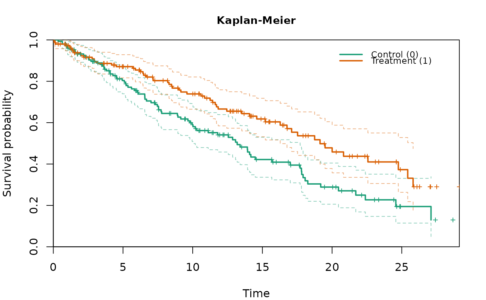
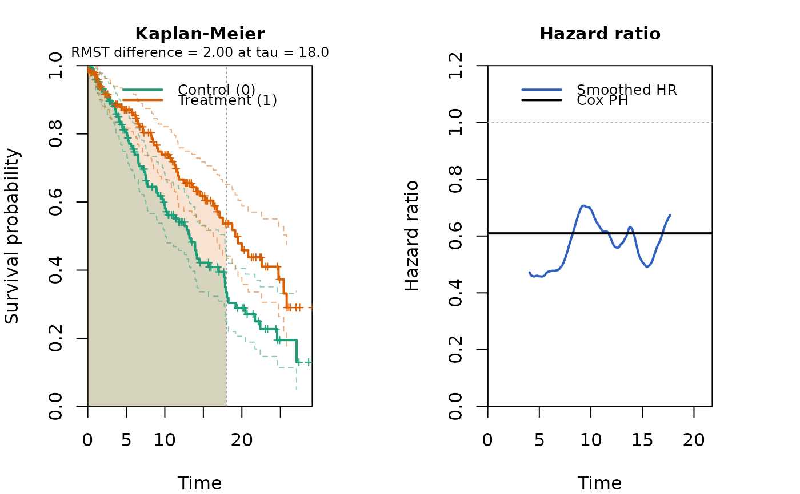
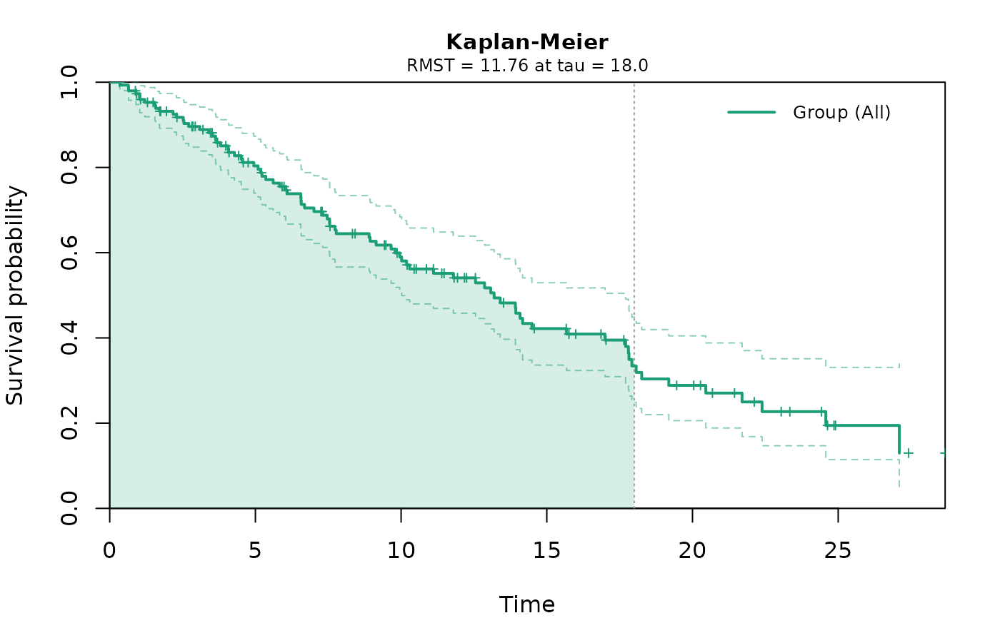

Builds the Kaplan-Meier step functions for a single realized data set (for
example one replicate from simdata_fast) and returns a
kmcurve_fast object that can be drawn with
plot.kmcurve_fast and summarized with
print.kmcurve_fast. Both the two-group case and the single-group
case are supported. This is an analysis-stage and plotting helper, written in
plain R for use on a single data set, and is not intended to be called inside
a simulation loop. The fast point estimator survfit_fast remains
the tool for repeated evaluation inside loops.
Arguments
- time
A numeric vector of follow-up times for all subjects.
- event
An integer or numeric vector of event indicators (1 = event, 0 = censored), aligned with
time.- group
A vector identifying the groups, aligned with
time, with one or two distinct values. IfNULL(default), all subjects are treated as a single group.- control
The value of
groupthat denotes the reference (control) group; the other value is treated as the treatment group. Required in the two-group case and ignored in the single-group case.
Value
An object of class kmcurve_fast: a list with a logical
two_group flag, the group values and their labels, the per-group
Kaplan-Meier summaries in element km, the pooled data, and the
per-group sample sizes n and event counts events.
Details
For each group the object stores the distinct event times, the number of
events and the number at risk at those times, the Kaplan-Meier survival
estimate, the Greenwood standard error, the Nelson-Aalen increments
d_i / Y_i (used by the plot method to estimate a smoothed time-varying
hazard ratio), and the censoring times. The pooled data are also retained so
that the plot and print methods can reuse coxph_fast,
rmst_fast, and ahr_fast for the constant Cox
hazard ratio, the restricted mean survival time, and the average hazard
ratio. When group is NULL or has a single distinct value, a
single-group object is built and the plot method draws one survival curve
with no hazard ratio.
Examples
set.seed(1)
n <- 150
t0 <- rexp(n, log(2) / 12)
t1 <- rexp(n, log(2) / 18)
cens <- runif(2 * n, 0, 30)
time <- pmin(c(t0, t1), cens)
event <- as.integer(c(t0, t1) <= cens)
group <- rep(c(0, 1), each = n)
fit <- kmcurve_fast(time, event, group, control = 0)
print(fit)
#> A kmcurve_fast object (two groups)
#>
#> Group Role N Events Median
#> 0 control 150 81 13.13
#> 1 treatment 150 58 19.10
#>
#> Cox PH hazard ratio (treatment vs control): 0.609
plot(fit)

plot(fit, hr = TRUE, rmst = TRUE, tau = 18)

# Single-group object: pass group = NULL (or a single-level group)
fit1 <- kmcurve_fast(time[group == 0], event[group == 0])
plot(fit1, rmst = TRUE, tau = 18)
